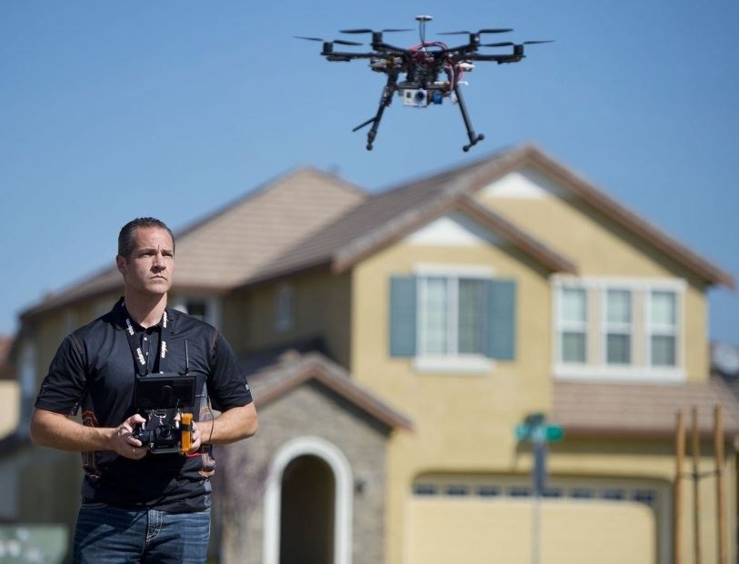

Today, drones serve multiple purposes for its users. Businesses and the public both profit from drones. First we'll take a look at how businesses profit from drones.
Real estate companies can use, and are using, drones to help them get an immense look at their properties. They use drones to capture aerial photos of properties for sale. This does not only helps the realtor but the customer too. Customers can then use these videos or images to grasp what they are buying from a different angle.
Aircraft companies and maintenance businesses use drones to perform inspections on large aircraft. This enables them to quickly examine the entire aircraft and analyze/repair issues. This allows them to find problems quickly without having to take the time to manually navigate to the designated area on the exterior of the plane.
One of the most critical facilities that use drone technologies is a Fire and Rescue team. The team will use a drone when a large helicopter is not safe to navigate around small or dangerous areas. For example, if a camper is hiking in a forest and happened to find their way into a dangerous situation and needed to be rescued, the search and rescue team could use a drone to get a better view and locate the camper quickly.
Now we will take a look at a few personal uses of drone technology. The first example that comes to mind is extreme athletes, from skateboarders to snowboarding, capturing their gnarly moves for the rest of the world to see. This allows the viewers of the videos to see the action like never before.